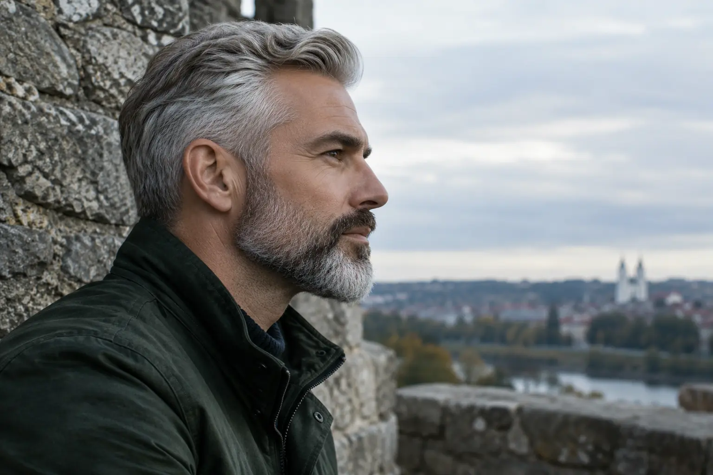

Barzdos kirpimas ir modeliavimas: ilgis, kontūras ir darbo apimtis
Autorius: Madbeauty redakcija · Numatyta 2026 m. gruodžio 2 d. 10:00 (Lietuvos laiku)
Kaip sutarti barzdos ilgį, kontūrą ir ūsų apimtį? Palyginame kirpimą bei modeliavimą ir parodome, kaip aprašyti norimą formą.

Barzdos kirpimą ir modeliavimą patogiausia atskirti pagal norimą rezultatą: ar daugiausia keičiate ilgį, ar norite apibrėžti ir formą. Šie pavadinimai gali persidengti, todėl vien paslaugos pavadinimas nepasako, kas tiksliai įeina į vizitą. Prieš susitariant verta įvardyti zonas, kurias norite palikti, patrumpinti ar sutvarkyti.
Kirpimas ir modeliavimas: kokios užduoties norite?
„Kirpimas“ gali būti patogi užduoties formuluotė, kai svarbiausia konkretus ilgis ar jo pakeitimas. „Modeliavimas“ dažniau vartojamas kalbant apie norimą barzdos siluetą, kontūrą ir ūsų santykį su likusia forma. Tai nėra visiems teikėjams vienoda profesinė klasifikacija: viename perskaitytame paslaugų meniu barzdos kirpimas ir modeliavimas įvardyti atskirai, o taip pat atskirti formavimo mašinėle ir skustuvu variantai. Šis meniu parodo vieno teikėjo pasiūlos pavadinimus, o ne bendrą taisyklę ar Madbeauty paslaugų prieinamumą: Gargždų Barzdaskučiai – metodai ir paketai.
Kad užsakant neliktų spėlionių, pasakykite ne tik „kirpimas“ ar „modeliavimas“, bet ir ko norite kiekvienoje zonoje. Taip pat pasitikrinkite, ar jūsų pasirinkto teikėjo paslaugos aprašyme šie darbai įtraukti, ar reikia juos aptarti atskirai.
Barzdos zonų žemėlapis: užduotis prieš vizitą
Galite mintyse arba telefone pasižymėti šias zonas. Tai susitarimo ruošinys, o ne techninė kirpimo instrukcija ar pažadas, kad konkreti paslauga jas visas apima.
- Skruostai: kur norite išlaikyti esamą formą, o kur pageidaujate pakeitimo?
- Šonai: ar tikslas yra trumpesnis ilgis, ar norite pakeisti perėjimą į likusią barzdos formą?
- Žandikaulis ir smakras: kurias vietas palikti ilgesnes, o kurias trumpinti?
- Ūsai: ar jie yra atskira užduoties dalis? Pasakykite, kokio ilgio ir ryšio su barzda norite.
- Kaklo zona: aptarkite, ar ją įtraukti į užduotį ir kokio rezultato tikitės.
Prie kiekvienos zonos užtenka pasirinkti vieną iš trijų krypčių: „palikti“, „trumpinti“ arba „aptarti kontūrą“. Jei nežinote, kaip tiksliai pavadinti norimą formą, parodykite dabartinę barzdą iš priekio ir šono, o nuotraukoje pažymėkite, kas patinka ir ką norite pakeisti. Pavyzdys tik iliustracinis: žmogus nori išsaugoti smakro ilgį, sutrumpinti šonus ir atskirai aptarti ūsus. Tai aiškesnė užduotis už vieną žodį „modeliavimas“.
Kontūras, augimo kryptis ir tankis
Nuotrauka padeda parodyti bendrą siluetą, tačiau ji negarantuoja identiško rezultato: jūsų dabartinis ilgis, tankis, augimo kryptis ir pageidaujamas pokytis gali skirtis nuo pavyzdžio. Todėl įvardykite, kurios nuotraukos detalės svarbiausios – pavyzdžiui, bendras ilgis, ūsų apimtis ar kontūro pobūdis – ir kurias paliekate specialisto aptarimui. Venkite prašyti „tokios pačios barzdos“, jei iš tiesų svarbi tik viena jos dalis.
Ką išsiaiškinti apie vizito apimtį
Paslaugų pavadinimai ne visada paaiškina, kokie darbai įskaičiuoti. Prieš patvirtindami vizitą, patikrinkite konkretaus teikėjo pasiūlymą ir, jei reikia, išsiaiškinkite:
- Ar pasirinkta paslauga skirta tik ilgiui keisti, ar apima ir formos bei kontūro aptarimą.
- Ar į užduotį įeina ūsų ir kaklo zonos, ar jos pasirenkamos atskirai.
- Kokie formavimo būdai nurodyti būtent šiame pasiūlyme ir ką teikėjas jais vadina.
- Kokia yra visos sutartos užduoties kaina ir numatoma trukmė; jų neįmanoma nustatyti vien iš paslaugos pavadinimo.
Kaip susitarti dėl kasdienės formos
Jei norite, kad forma būtų lengvai prižiūrima namuose, pasakykite, kiek laiko jai skirsite ir ką jau naudojate. Paprašykite paaiškinti, kaip išlaikyti sutartą siluetą ir kokie žingsniai priklauso nuo konkretaus rezultato. Tai padeda atskirti vienkartinį sutvarkymą nuo kasdienio formavimo poreikio, nesukuriant įspūdžio, kad visiems tinka tas pats būdas ar priemonė.
Trumpai: jei pagrindinis tikslas yra pakeisti ilgį, įvardykite ilgį ir zonas; jei norite keisti ir siluetą, aptarkite kontūrą, ūsus bei tai, kas įeina į modeliavimą. Platesnį kontekstą apie vyrų paslaugų pasirinkimą rasite „Vyrų grožio paslaugų gide: kirpimas, barzda, dažymas, oda ir depiliacija“.
Palyginkite procedūrų aprašus kataloge: Barzda ir skutimas. Konkrečią darbų apimtį, kainą ir prieinamumą tikrinkite prie realaus teikėjo pasiūlymo.
Susiję gidai
Šaltiniai
- Gargždų Barzdaskučiai · metodai ir paketai · www.treatwell.lt